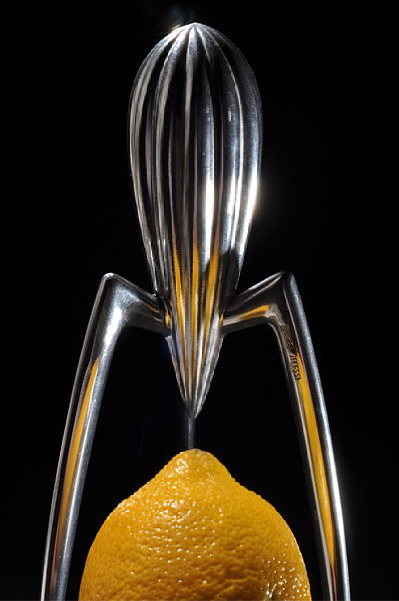
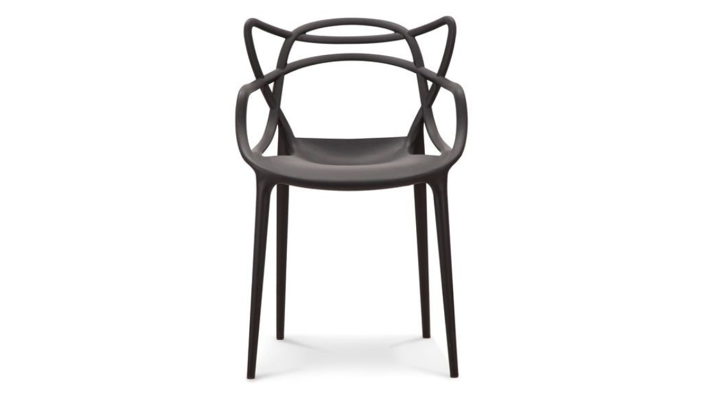
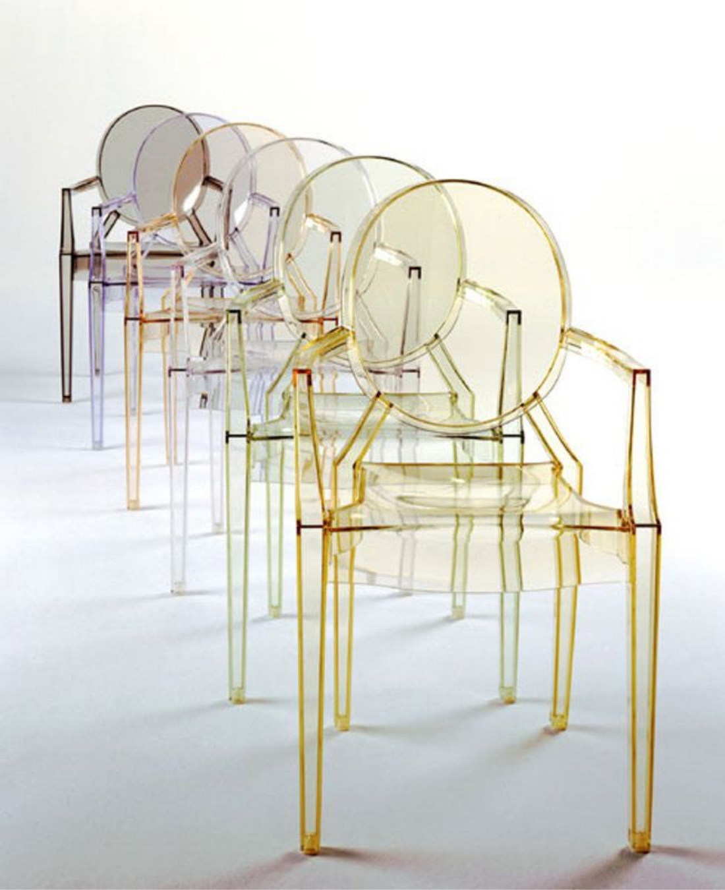
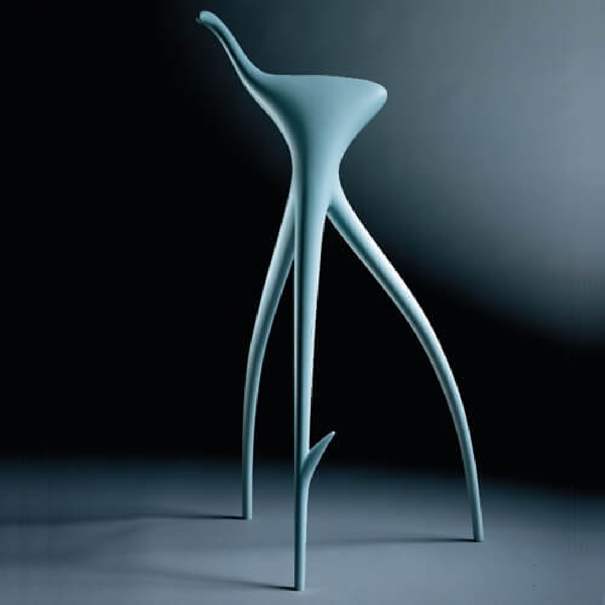

주방 용기를 예술로 승화시켰다는 평을 듣고 있는 이탈리아 알레시(Alessi)의 감귤류 과즙기 ‘주시 살리프’(Juicy Salif)는 기발한 디자인으로 전 세계 사람들에게 깊은 인상을 남긴 제품입니다. ‘주시 살리프’를 처음 본 사람들은 대게 ‘저게 뭐하는 물건인가?’ 내지는 ‘장식품인가보다’라는 반응을 보이곤 했다지요. 그러나 디자인의 측면에서 최고의 작품으로 평가되고 있는 주시 살리프는 ‘기발한 형태’를 하고 있으면서 동시에 어느 과즙기보다 ‘뛰어난 기능’을 구현하고 있습니다. 오렌지나 레몬을 반으로 잘라 위에 놓고 누르면서 돌려주면 과즙이 흘러내리며 밑의 뾰족한 꼭지에서 아래로 떨어지며, 과즙기를 쓰고 난 후에는 물로 한번 씻어주면 되기 때문에 사용하기 편리하기까지 합니다.

이작품은 Master Chair로 필립 스탁과 외제니 퀴틀렛이 함께 디자인하여 2010년 발표된 작품입니다. 그해 Good Design Award를 수상했고, 2013년 Red Dot Award에서도 수상하는 등 호평을 받은 작품인데, 의자 디자인의 명작으로 꼽히는 찰스 임스(Charles Eames) 에펠체어(Eiffel chair)와 아르네 야콥슨(Arne Jacobsen)의 Seris 7, 이에로 사리넨(Eero Saarinen)의 튤립 암체어(Trlip Armchair) 세 의자의 등받이 라인들을 연결하여 하나의 의자로 구현해 내었습니다.

또 다른 의자 작품인 Louis Ghost Chair입니다. 필립 스탁과 플라스틱 의자 제조사인 카르텔(Kartell)과 합작한 작품으로 루이 14세 때의 디자인을 살리며 현대적인 느낌을 가미한 의자로 처음 본 사람들은 앉기 불안해 했다고 하는데. 보편적으로은 안정적이고 편안해 보이는 것을 추구하는 의자를 투명하게 디자인한 필립 스탁의 재치가 돋보입니다.

1990년대 이후, 가장 잘 나가는 인더스트리얼 디자이너 중 한사람인 필립스탁(Philippe Starc, 1949~)의 대표작입니다.이 의자는 독일의 영화감독인 빔 벤더스를 위하여 디자인했다고 알려져 있습니다.의자보다는 조각품과 같은 형태입니다. 라인이 매우 아름다운 3개의 다리로 만들어진 의자인데, 실재로도 앉을 수 있는 의자로 사용이 가능하다고 합니다. 디자인에 대해서는 '나무뿌리에서 영감을 받았다,' '인삼에서 영감을 받았다.'등의 많은 이야기가 전해지고 있는 의자입니다.